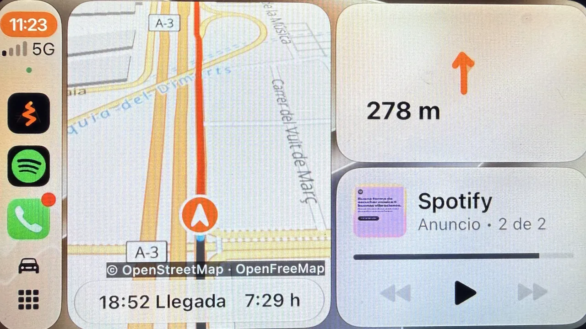
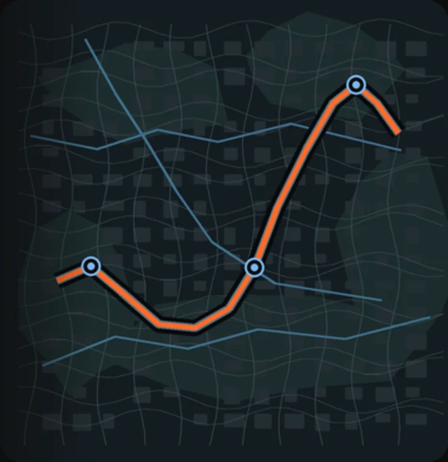
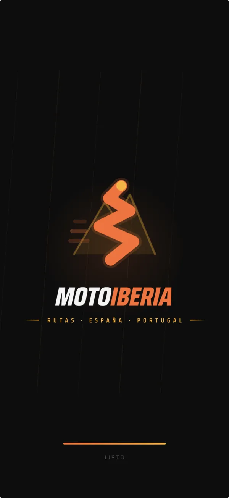
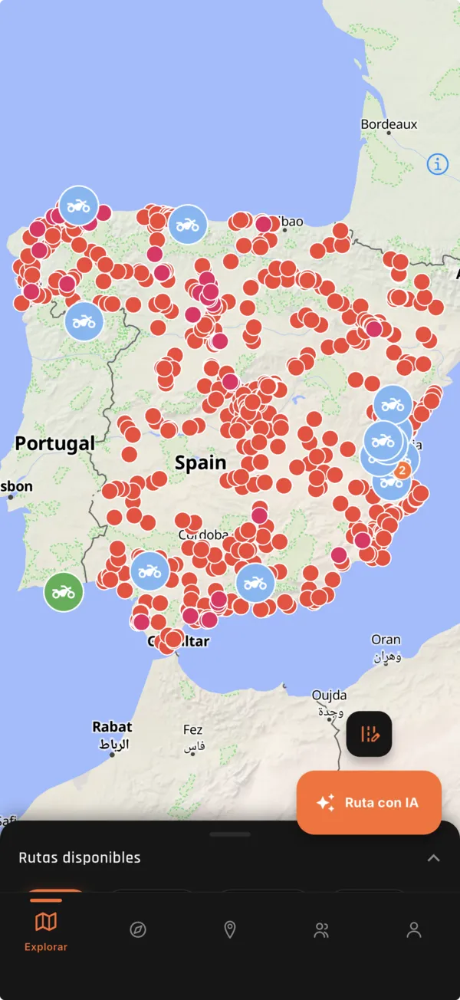
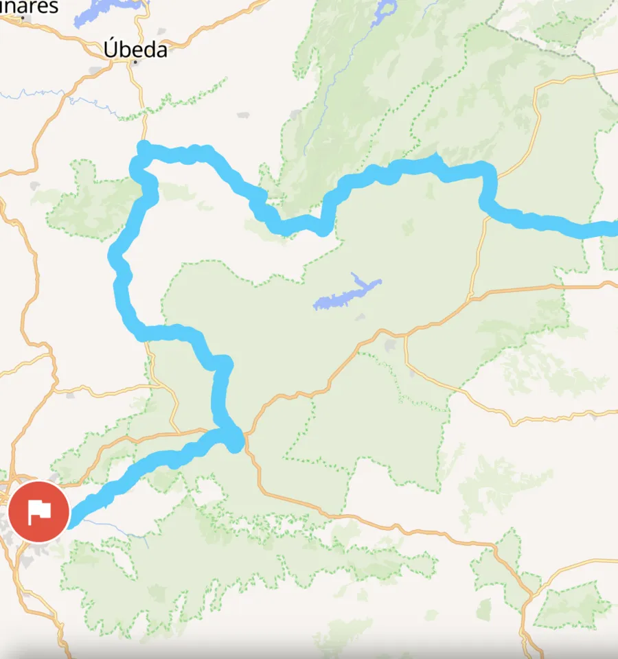
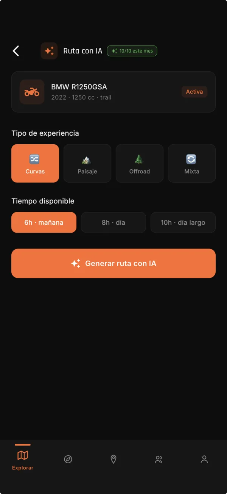
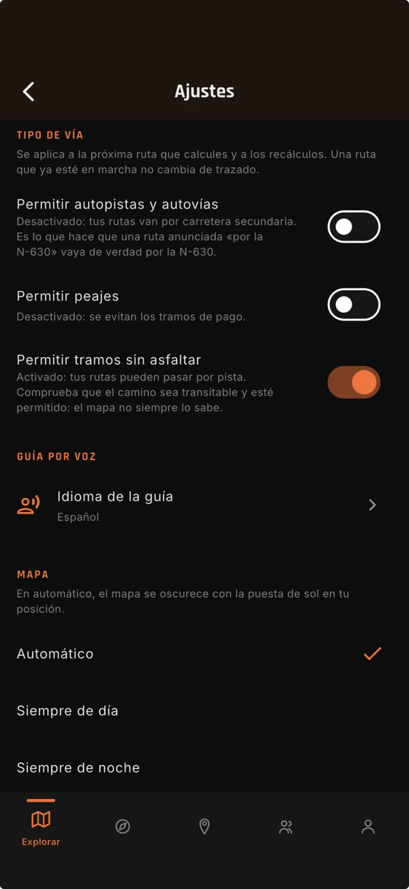
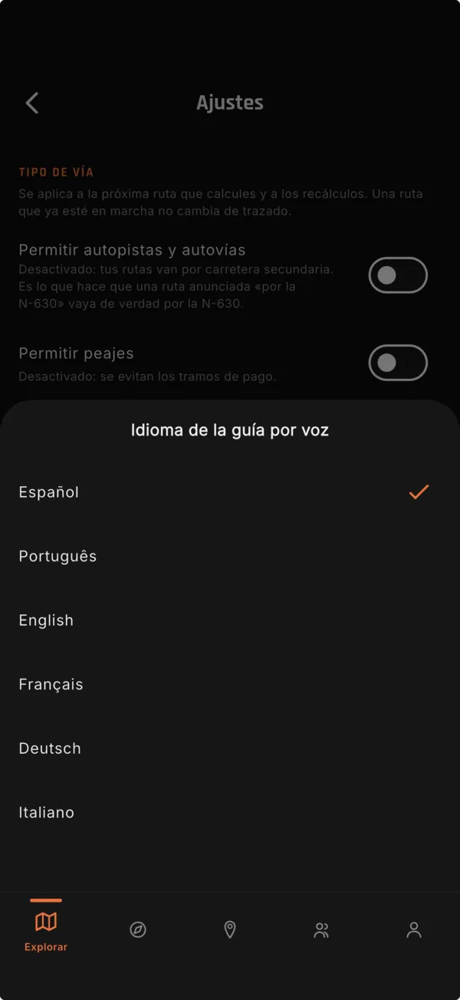
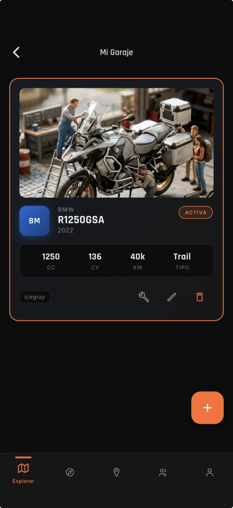

Rutas en moto por la Península Ibérica
Carreteras que se viven. Y se saborean.
Rutas por la Península y navegación en CarPlay pensada para la moto.
Próximamente en App Store
App gratuita. Sin cuenta para empezar.

Navega · Explora · Comparte
Rutas · España y Portugal

PK 01 CarPlay
Rueda. El móvil se queda en el bolsillo.
La navegación de MotoIberia está pensada para ir en moto. La llevas en la pantalla de CarPlay y el iPhone puede seguir bloqueado en el bolsillo. Probada y validada rodando de verdad.
PK 02 Funciones
Lo que hace hoy MotoIberia
-
Rutas curadas
Rutas seleccionadas por toda la Península.Las rutas largas vienen con etapas, para dividir el viaje en tramos.
-
Rutas con IA
Rutas circulares desde donde estás.Para proponértela solo se usa tu ubicación aproximada. Necesita cuenta.
-
Mi ruta
Crea tu ruta tocando el mapa.Marca los puntos tocando el mapa o buscando una dirección. La ruta sale siempre desde donde estás y la navegas al momento.
-
Gasolineras en ruta
Ves las gasolineras de tu recorrido.Las que te encuentras a lo largo de la ruta que llevas.
-
Avisos de radar
Radares fijos y de tramo de la DGT.Radares fijos y de tramo de la DGT. No incluye radares municipales ni los de Cataluña, el País Vasco o Portugal.
-
Modo noche
Cambia solo.La app pasa sola a modo noche, sin que toques nada.
-
Comunidad
Publicaciones, comentarios y quedadas.Con moderación: cada publicación y comentario se puede denunciar, y puedes bloquear a quien quieras. Las denuncias se revisan en menos de 24 horas.
-
Garaje y mantenimiento
Tus motos, al día.Guarda tus motos y recibe recordatorios de mantenimiento.
PK 03 La app por dentro
Pantallas reales, sin retoques.
-

Al arrancar El emblema, y a rodar. -

Explorar Toda la Península en un mapa. -

Rutas curadas, por etapas Cabo de Gata · Etapa 3: de Vélez Blanco hacia Granada, 308 km. -

Ruta con IA Dices qué te apetece y cuánto tiempo tienes. -

Carretera secundaria Sin autovías ni peajes, salvo que tú los quieras. -

Guía por voz En seis idiomas. -

Tu garaje La moto activa, con sus datos y su mantenimiento.
PK 04 Sin cuenta
Sin cuenta para empezar.
Sin cuenta: ver las rutas curadas, navegarlas (también en CarPlay), crear tu ruta en «Mi ruta» y ver gasolineras y talleres.
Con cuenta: rutas con IA, comunidad, guardar rutas, subir fotos, historial, garaje y mantenimiento.
Próximamente en App Store